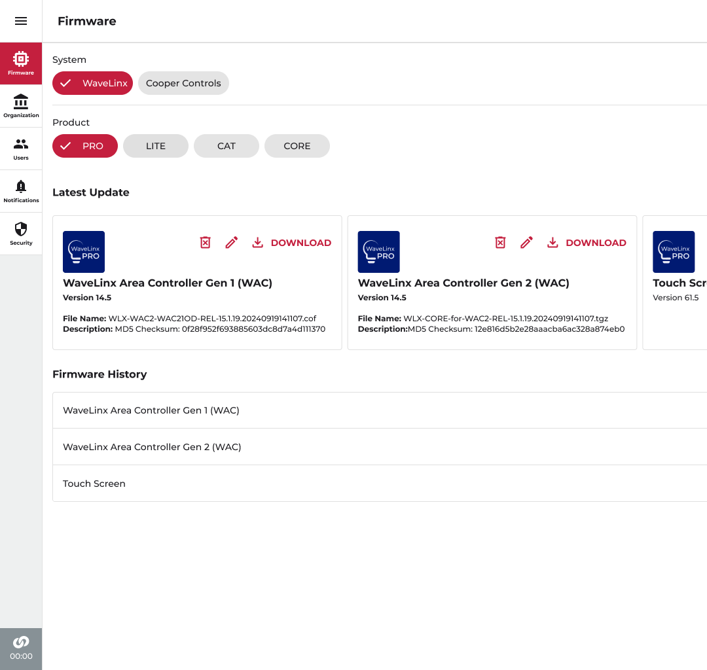
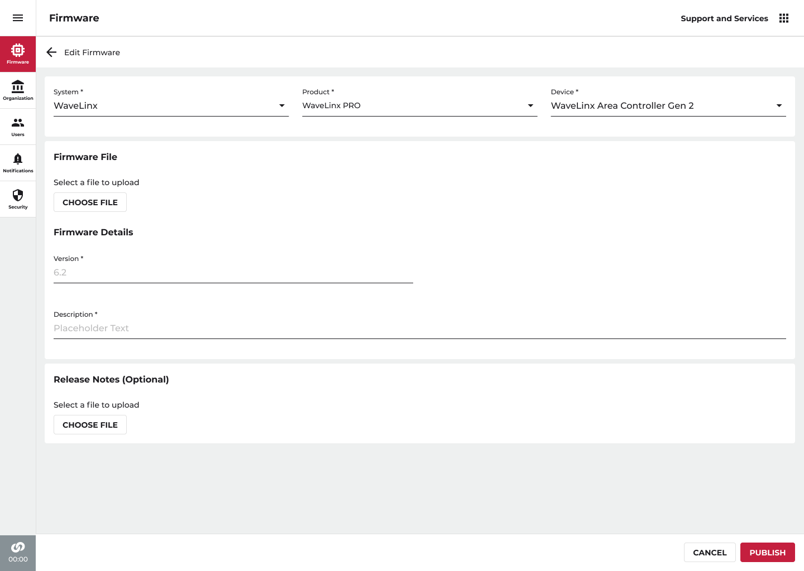
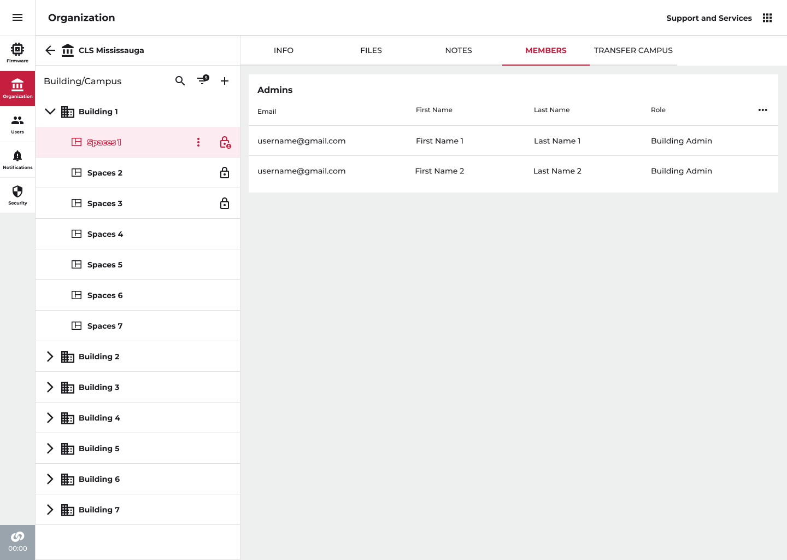
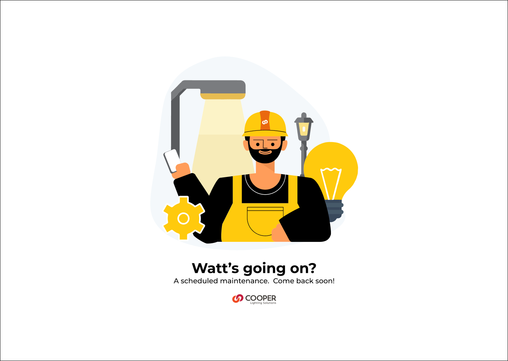
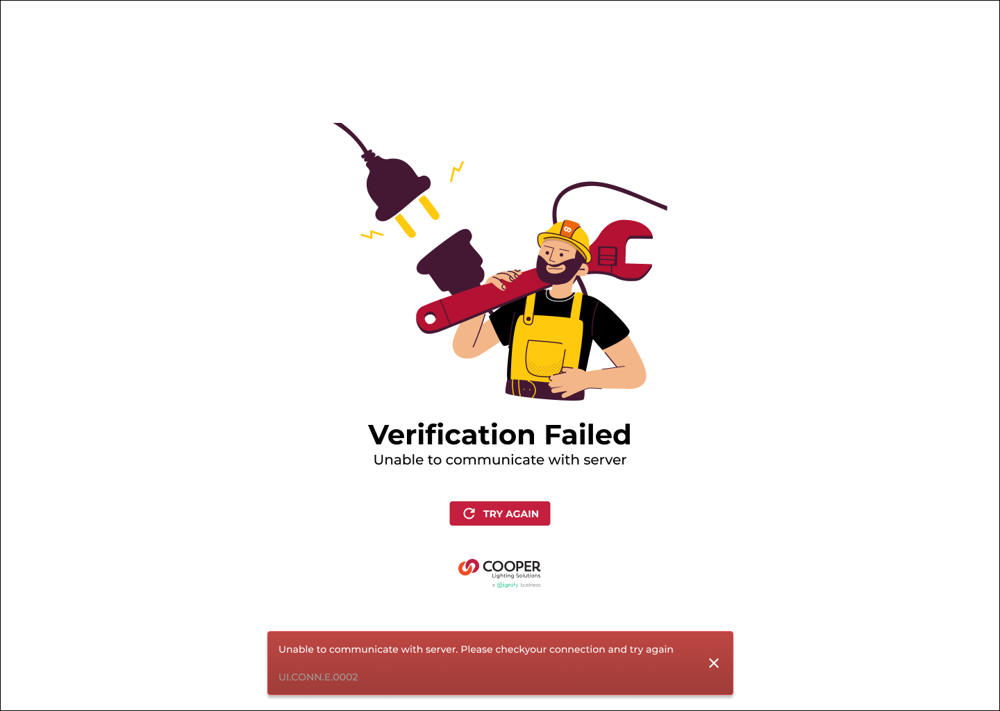
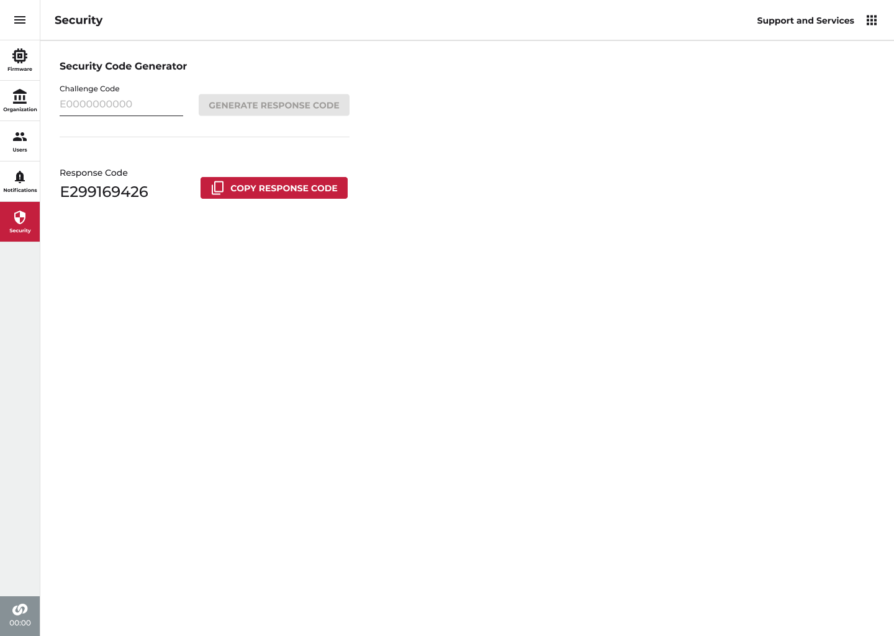

The back room behind the lights
The lights in an office tower, a hospital or a parking lot are run by little computers hidden in the ceiling and up the poles. Those computers need new software from time to time. This is the staff website that hands it out, keeps track of every customer who has it, and can unlock a control box that nobody can reach.
Send the wrong file to a hospital and the lights go out. Almost every choice on this website comes back to that
- My role
- Lead designer
- Company
- Cooper Lighting Solutions
- What it is
- A website only staff and approved fitters can open
- Who uses it
- Support staff, approved fitters, account managers
- Runs on
- A computer, with a phone version
- I did
- All five areas, from how it is arranged to the finished screens

01 The job
A shop counter, a filing cabinet and a locksmith
Most of my work at this company was on the screens a customer sees. This one is the opposite. It is the room out the back, the one customers never open, and it holds three jobs that have almost nothing to do with each other.
The first is a shop counter. Every controller, sensor and wall screen the company sells runs on its own small piece of software, and every so often a new version comes out. Somebody has to put that file somewhere the right people can find it, and keep the wrong people away from it.
The second is a filing cabinet. The company had 414 customer accounts on this website. Each one owns buildings. Each building has rooms and areas inside it. People come and go, buildings get sold, and the paperwork has to keep up.
The third is a locksmith. Some equipment lives outdoors, up a pole, with no way to reach the internet. When it locks itself, the person standing under it cannot fix it alone. Head office has to open the door with them, over the phone.
One website, three completely different jobs. Getting them to sit together without turning into a mess was most of the work.
-
What I did
- Worked out how the whole thing should be arranged, and what the five areas should be
- Designed the software shop counter, including how you find one file among hundreds
- Designed the customer filing system, three levels deep
- Designed how people are added, and how their level of access is shown
- Designed the unlocking flow that support staff and a fitter walk through together
- Designed what the website says when it is down, and when it cannot reach the server
-
The three rules I worked to
- Nobody should ever be able to download a file they are not trained to install
- Anything that cannot be undone has to say so, in words, before you do it
- Every screen should be readable by someone who is on the phone at the same time
-
414
Customer accounts in the list
Shown 14 to a page
-
5
Areas down the left edge, and that is the whole website
Software, customers, people, messages, unlocking
-
3
Tries you get at the unlock code before the box shuts you out
Why that screen is written so plainly
02 Who opens it
Three very different people, one website
A website for staff is easy to design badly, because the people who ask for it are the same people who will use it, and they already know everything. They will happily accept a screen that only makes sense if you were in the meeting. So the first thing I did was write down who actually opens this, and what they are doing while they do it.
-
The fitter, standing in the building
An electrician or installer who has been trained and approved by the company. They are on site, often on a ladder, often with dust in the air and one bar of signal. They want one thing: the newest file for the exact box in front of them, and confidence that it is the right one. They are not browsing.
-
The support person, on a call
Sitting at a desk with a headset on, talking to that fitter. They are reading things out loud and typing things in that were read out to them. Every screen they touch has to survive being described over a phone, which means short labels and no clever pictures that need explaining.
-
The account manager
Looks after the customer relationship. Cares about which buildings belong to which customer, who at the customer has been given access, and whether the service agreement is on file. Rarely touches software files at all.
The thing that decided the layout
These three never need each other's screens. The fitter does not care about service agreements. The account manager never sends out a software file. So instead of one busy home page trying to serve everybody, the website has no home page at all. It opens straight into whichever of the five areas you went there for, and the left edge stays put so you always know which one you are in.
03 The shop counter
Finding one file among hundreds
Here is the problem in one sentence. The company sells two families of lighting equipment. Each family has several products. Each product has several pieces of equipment. Each piece of equipment has a new software version every few months, and the old ones have to stay available because not every building is up to date.
Multiply that out and you get a very long list. The fitter on the ladder needs one item from it. A search box would not help, because they do not know what the file is called. They know what the box in front of them is.
So the page is built as two questions, asked in order, before anything else appears. Which family of equipment? Then, which product? Two taps and the long list has become three or four cards.

What you get back is split in two, and the split matters. Newest at the top, under a heading that says so. Everything older folded away underneath, one closed row per piece of equipment.
The reason is that ninety-nine times out of a hundred you want the newest one, so it should take no work at all. But the hundredth time you are matching an older building and you need a version from two years ago, and if the website had thrown that away you would be on the phone to support instead.
-
On the card
The version number is the headline
Not the file name. The file name is a long string of letters, numbers and dates that is impossible to read out loud and easy to confuse with its neighbor. The version number is short, it is what everyone says out loud anyway, and it is what is printed in the paperwork. So it goes in large text under the equipment name, and the full file name sits below it in smaller text for anyone who needs to check it exactly.
-
On the card
A fingerprint, so you can prove the file arrived whole
Each card carries a long code that works like a fingerprint for the file. After downloading, the fitter's tools can work out the fingerprint of the file they actually received and compare the two. If they match, nothing got damaged on the way down. If they do not, stop, because a half-downloaded file put into a lighting controller is exactly how a floor of lights ends up dark. It is an ugly string of characters and it is the most important thing on the card.
-
Next to the download
The instructions live beside the file, not in a folder somewhere
Two links sit at the top of the results: one opens the instruction manual, the other opens a table showing which versions of which equipment work together. Both used to be somewhere else entirely. Putting them on this page, at the moment somebody is about to download, is the cheapest possible way to stop a bad pairing.
The line that does the most work
“Only approved fitters can download these files.” One line, above everything.
04 The gate
Saying no in a way that still helps
This is the part I spent the longest on for the fewest pixels.
Not everybody is allowed to download this software. If you have not been trained and approved on a given family of equipment, you must not have the file, because installing it wrongly can take out the lighting in a working building. That is a real restriction and it is not negotiable.
The easy way to build that is to hide the files, or to gray out the buttons, and let people work out why. I have used plenty of software that does exactly that, and it is infuriating. You cannot tell whether you are missing a permission, whether the page is broken, or whether the file simply does not exist.
So the restriction is written out in a sentence, in plain words, at the top of the page, before you go looking. It says that only approved fitters can download for the selected family, that there is a process for becoming approved, and it gives the phone number and the two email addresses for asking about it.
It costs one line of text and it turns a dead end into a next step. That is the whole trick, and it is the same trick I used on every message in this website.
What I rejected: hiding the files
Cleaner looking, and genuinely worse. Somebody who is approved but signed in wrongly would see an empty page and assume the file was not published yet. Then they call support, and support has to work out which of four different things went wrong. Hiding things does not remove the confusion, it just moves it to somebody else's afternoon.
What I rejected: a pop-up on arrival
A box that appears and has to be dismissed. It would be read once, clicked away forever, and then it is not there at the moment it matters, which is when somebody is hovering over Download. Text that stays on the page is weaker at grabbing attention and far stronger at being there later.
05 The other side of the counter
Putting a new file up, in one screen
Somebody inside the company has to put these files up in the first place. That happens a few times a month, usually under time pressure, often by somebody who has not done it since the last release.
Work like that should not be a series of steps you can get lost in the middle of. It is one page, in the same order as the questions the fitter will be asked. Which family, which product, which piece of equipment. Then the file itself, then the version number and a short description, then the release notes if there are any.
The order is deliberate. Filling this form in from top to bottom builds exactly the path the fitter will walk down to find it. If you cannot answer the three questions at the top, you are not ready to publish, and you find that out in the first five seconds rather than after uploading a large file.

The button at the end says Publish, not Save. Save sounds private and reversible. This is neither. The moment you press it, approved fitters around the world can download that file and put it into working buildings. The word on the button should carry that weight.
06 The filing cabinet
Four hundred and fourteen customers
The second job is keeping track of customers, and it starts with a list that is too long to scroll. There were 414 accounts, and the number only ever goes up.
A long list needs three different ways in, because people arrive knowing three different things. Sometimes you know the name, so there is a search box. Sometimes you only know roughly what you are after, so there are saved filters, with a small count showing how many are switched on. And sometimes you are just working through them, so the list is paged, fourteen at a time, with the count printed next to the arrows.
That count is doing quiet work. Seeing “1 to 14 of 414” tells you instantly that scrolling is hopeless and you should search instead. A list that just kept loading more as you scrolled would hide that from you.

I am fond of that empty state, because the instinct in a review is always to put something useful in all that space. A summary. Recent activity. A chart. Every one of those would be a thing you have to look past on the way to picking a customer, several hundred times a week, and none of them are why you opened the page.
07 The shape of a customer
Customer, building, room
Once you pick a customer, the same narrow column becomes a tree three levels deep, and those three levels are the most important decision in this half of the website.
A customer owns one or more buildings, or a campus of them. A building holds rooms and areas. That is it, and it matches how the people using this talk about the world: “the Mississauga site, building two, the third floor meeting rooms.” Nobody had to be taught the filing order, because it was already the order in their head.
Some rooms carry a small padlock, which means that room is set up and locked so it cannot be changed by accident. It is a symbol, not a color, so it survives being printed, being looked at on a bad screen, and being looked at by somebody who cannot pick out reds and greens.

Everything else about a customer lives behind five tabs across the top: their details, files, notes, the people who have access, and moving a building to another customer. Five plain nouns. No icons on their own, because a tab strip made of pictures is a memory test.
| Tab | What is in it | Why it is separate |
|---|---|---|
| Details | Name and address, which of the company's systems they have, the service agreement, and a main contact. | The things an account manager checks before a call. Read far more often than it is changed. |
| Files | Documents kept against this customer, such as drawings and handover paperwork. | Grows without limit and has nothing to do with the rest. Would swamp any screen it shared. |
| Notes | What happened, written by whoever it happened to. | Free writing next to a form invites people to put the important thing in the wrong place. |
| Members | Everyone from that customer who can sign in, and what they are allowed to do. | The one tab where a careless change hands access to the wrong person. It deserves its own quiet space. |
| Transfer | Moving a building or campus to a different customer, and the record of every move so far. | Rare, hard to undo, and easy to fire off by accident from a menu. Kept behind a tab you have to choose. |
08 The hard one
Moving a building without losing the people in it
Buildings change hands. A property gets sold, a company is bought, a site is handed to a different manager. When that happens, the building has to move from one customer to another, and this turned out to be the most dangerous thing anybody can do on this website.
Here is why. A building comes with people attached, and those people have access to it. Move the building and leave them behind, and a working site loses everyone who could log in to it. Move the building and bring them along, and you have just given a set of strangers access to a customer they do not work for. Both are bad, in opposite directions, and the website cannot guess which one you meant.
So it asks. There is a single check box, labeled in words, that decides whether the people come too. It starts unchecked, because bringing people across is the choice with the wider consequences, and a default should never be the more dangerous option.

Underneath the choice is a table of every move that has ever happened to this building: when, from whom, to whom, and which person did it. It cannot be edited from this screen.
This is my favorite thing in the whole project and it is completely unglamorous. Moves like this get queried months later, usually when somebody cannot log in and nobody remembers why. Without a record you get an argument. With one you get an answer in ten seconds. It also does something quieter: knowing your name will sit in that table forever makes everybody a little more careful before pressing the button.
-
Should moving a building be a pop-up or its own screen?
A pop-up was fewer clicks, and that was exactly the problem. It put a move you cannot undo two clicks from a three-dot menu, with no room for the past moves that give it context. Making it a tab you have to deliberately choose adds a second of friction to the rarest and riskiest thing on the page, and buys the space to show the record.
-
Should the people move with the building by default?
Ticked by default is right more often, which is a genuinely good argument. It lost anyway. Forgetting to untick it hands strangers access to a customer, and nobody notices for weeks. Forgetting to tick it locks people out, which they report within the hour and which takes a minute to fix. When both mistakes are likely, the default should be the one that gets caught.
09 People
Who is allowed to do what, written out
Access is the thing people get wrong, and they get it wrong because software usually makes them guess. A list of names with a colored dot beside some of them. A shield symbol whose meaning you were told once. A row that looks slightly different from the others.
This page does none of that. People are split into two clearly headed groups, the ones who can change things and the ones who cannot, and then every single row spells out that person's level of access in words. Not a symbol. Not a shade. The words.
It looks almost too plain. That is the point. Somebody scanning this list on a phone, on a call, deciding whether to remove an account, should not have to remember what anything means.

The email address is the first column
Not the name. Two people at the same customer can easily share a first name, and plenty of records have a blank last name or a nickname typed in. The email address is the thing that is actually unique, the thing the person on the phone will read out, and the thing you search for. So it leads, and the names follow it.
10 Messages
What it says when something has gone wrong
The fourth area down the left edge is for messages, and I should be straight about what I designed here. The slot in the navigation is mine, and so is the whole layer of messages the website uses to tell you something has happened: the strip that slides up along the bottom to confirm a save, the notice about approval at the top of the software page, the page you land on when the site is down for planned work, and the page you get when it cannot reach the server. The detailed screens behind that navigation slot were not part of the work in this file, and I would rather say so than show you something invented.
The rule across all of them is the same and it is not complicated. Say what happened. Say what to do next. Never imply the reader caused it.


-
When it is down on purpose
A drawing, a joke about watts, and the plain fact that the work was scheduled and it will be back. Nothing is broken and nobody needs to do anything, so a stern gray error page would be a small lie. This is the one place in the whole website where the tone is allowed to be light, precisely because nothing is at stake.
-
When it cannot reach the server
No joke here. It says it could not reach the server, tells you to check your connection and try again, and prints a short reference code. That code is the only piece of jargon I kept anywhere on the website, because reading nine characters to a support person beats describing a screen for five minutes.
-
When you have just done something
A short strip slides up along the bottom of the screen, says what happened, and goes away. It never covers the thing you were working on and it never asks to be dismissed. Anything that genuinely needs a decision gets a proper question instead, not a message you might miss.
11 The locksmith
A door that takes two people to open
This is the part of the project I would show first.
Picture a control box on a pole in a parking lot. It runs the lights across the whole site. It is bolted up high, it is outdoors, and it has no connection to the internet. Something has gone wrong and it needs resetting.
Resetting it wipes the settings, so it must not be something a passer-by can do. But it also cannot need the internet, because there is not any. And the person standing under the pole is not necessarily somebody the company has approved to do it.
The answer is a pair of codes, and it works like a riddle only head office knows the answer to.
-
Step one
The box asks a question
The fitter opens the reset screen on the box itself. It shows a ten-character code, different every time. The screen also shows the name of the box and its serial number, so nobody resets the wrong one, and a support phone number, because the next step is a phone call.
-
Step two
They read it out to head office
A phone call to support. The fitter reads the ten characters down the line. This is the moment the design has to earn its keep: the code is set in large, evenly spaced characters, because the whole thing falls apart if a five gets heard as an S.
-
Step three
Head office works out the answer
The support person is signed in to this website, in the fifth area down the left edge. They type the code they were just read into one box and press a button. A different ten-character code comes back. That is the only screen in this area, and it does one thing.
-
Step four
The answer goes back down the phone
Read out the other way, typed into the box, and the box unlocks. Three wrong attempts and it stops accepting them, which is exactly why the person who has to say these characters out loud gets a Copy button rather than being asked to retype them.


What I like about this is that the security is not really in the software. It is in the shape of the arrangement. The box will only accept an answer that matches the question it just asked, and only head office can work out that answer, so a stranger with a ladder gets nowhere. No internet needed anywhere in the chain.
My job was to make sure the shape did not get ruined by the details, and nearly all of those details are about reading characters out loud to another human being. Big evenly spaced text on both codes. A Copy button on both codes. The name and serial number of the box on screen so the right one gets reset. The support number printed on the screen where you need it, not in a manual in a van.
Saying how many tries are left
Get the code wrong and the message does not just say it was wrong. It says how many attempts remain. Three tries with no counter is a trap, because you cannot tell whether to try again carefully or stop and start over. Printing the number turns a gamble into a decision, and it is the single highest-value word on that screen.
Why the unlocking screen has nothing else on it
One box in, one code out, one Copy button. It was tempting to add a history of past unlocks, or a link to the customer the box belongs to. Both were dropped. The support person is mid-call, listening to characters, and the cost of a mistake here is a site visit. This is the one screen in the project where I argued for less on the page than anybody asked for.
12 The thread
The same four habits, in all five areas
Three unrelated jobs in one website could easily have become three unrelated websites wearing the same header. What stopped that was not a color palette. It was four habits that show up in every area, and which I could point at in a review when something started drifting.
-
Meaning is written, not colored
A locked room has a padlock. A person's level of access is spelled out on their row. A chosen button carries a check mark. Every one of those would have been cheaper as a color, and every one of them would then have stopped working for anybody who cannot tell those colors apart, on a dusty screen, in daylight.
-
A refusal always comes with a way forward
You cannot download this without approval, and here is how to get approved. The server cannot be reached, and here is the code to quote. You have two tries left, so slow down. A no that does not tell you what to do next is just a call to support with extra steps.
-
Anything permanent leaves a receipt
Moves are written down, with who did them, and cannot be edited from the screen that made them. It solves the argument months later, and it changes how careful people are in the moment.
-
Every screen assumes a phone call
Codes are set in large evenly spaced text. Identifiers can be copied with one press. Tabs are plain nouns. Almost everything on this website is at some point described out loud to somebody who cannot see it, and that turned out to be the most useful test I had.
-
2 of 2
People needed to unlock an outdoor control box
And no internet at either end
-
0
Places where meaning is carried by color alone
Checked area by area
-
1
Piece of jargon kept, the reference code on the error page
Kept because saying it out loud is faster
13 Looking back
What I would do differently
-
The thing I got right
Writing the approval rule out as a sentence instead of hiding the files. It is one line of text and it is the difference between a website that refuses you and a website that tells you how to qualify. Once that pattern existed, every other message on the site had something to copy.
-
The thing I would change
The file fingerprint is the most important thing on a software card and it is presented as the least important: a long run of characters in small text at the bottom. It should be its own labeled thing with a Copy button, the same treatment the unlock codes got. I gave the codes that care because somebody had to read them aloud, and I did not notice the fingerprint needed it for the same reason.
-
The thing I still argue about
Having no home page. Opening straight into an area is right for the people who use this every day, and it is unhelpful for somebody sent a link once a year who does not know which of the five areas they want. I would still make the same call, but I would add a plain page listing the five with a sentence each.
-
The thing I learned
Software for staff gets judged by whether it can be described over a phone. Not by how it looks in a presentation. Every good decision in this project came from imagining two people on a call, one of them up a ladder, and asking whether the screen would survive it.